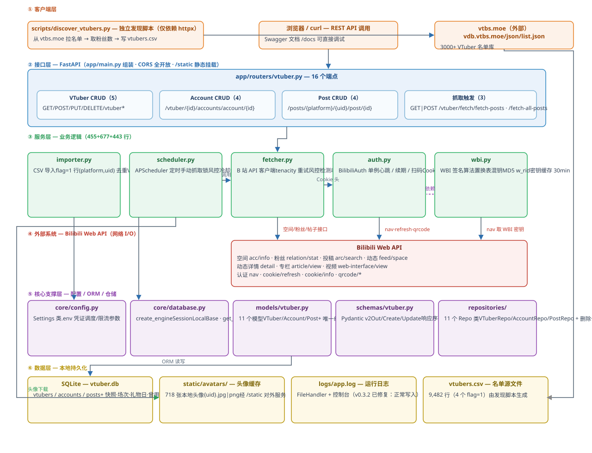
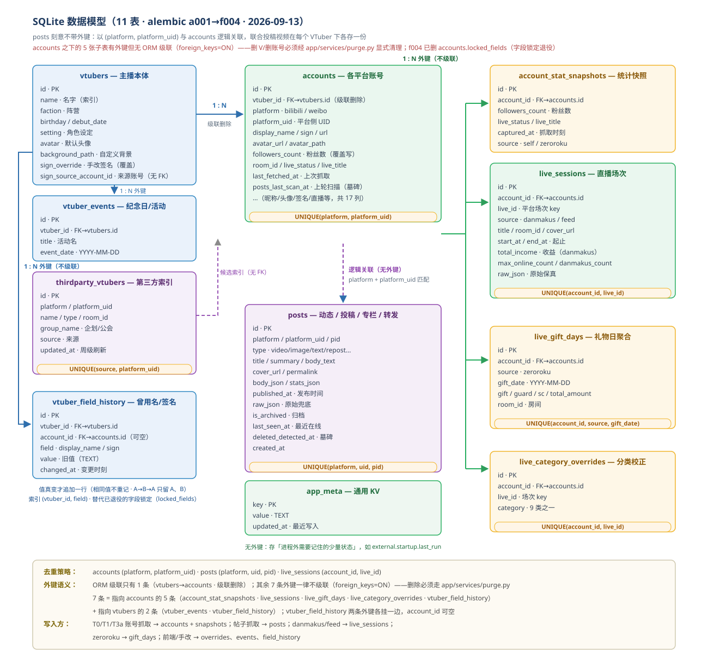
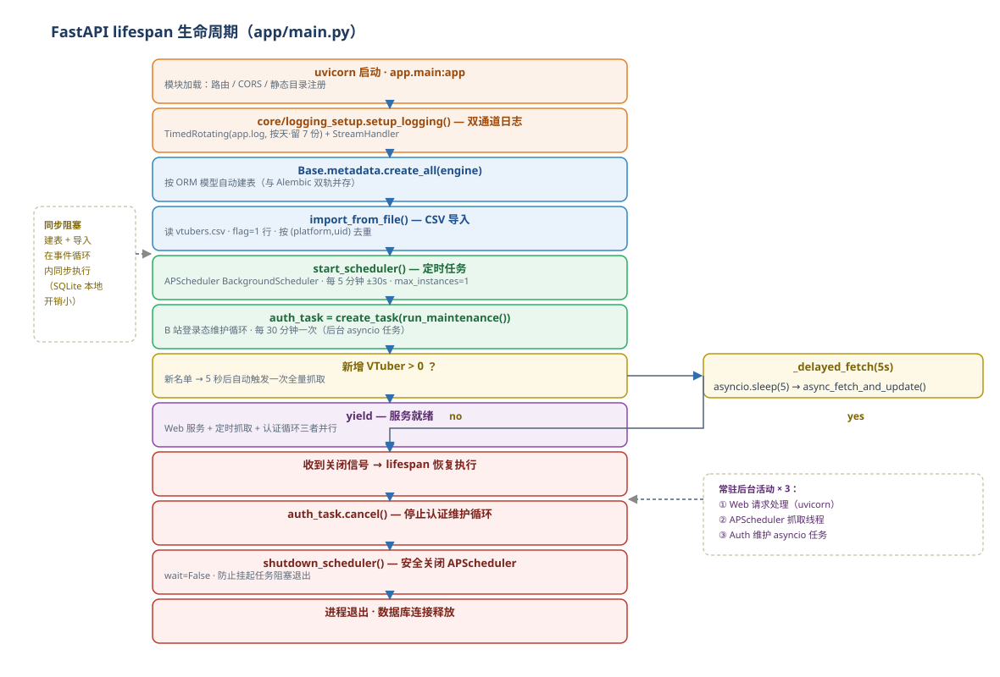
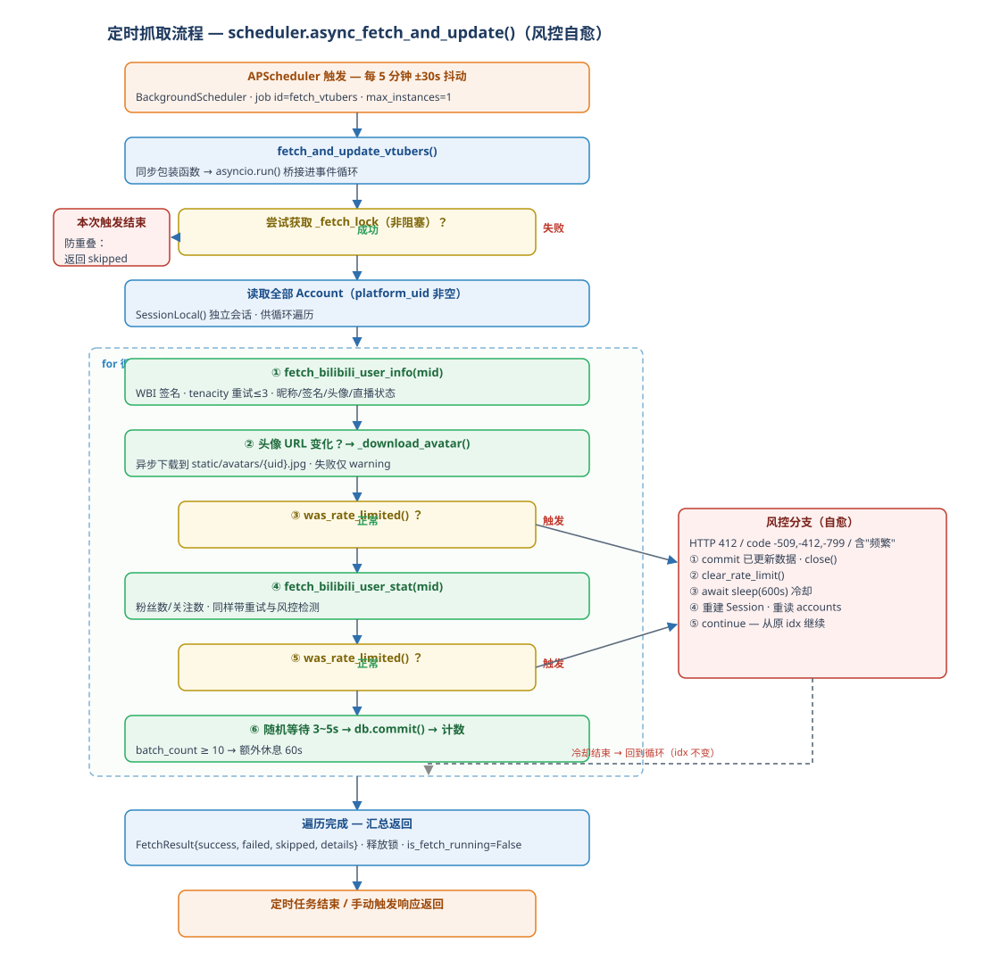
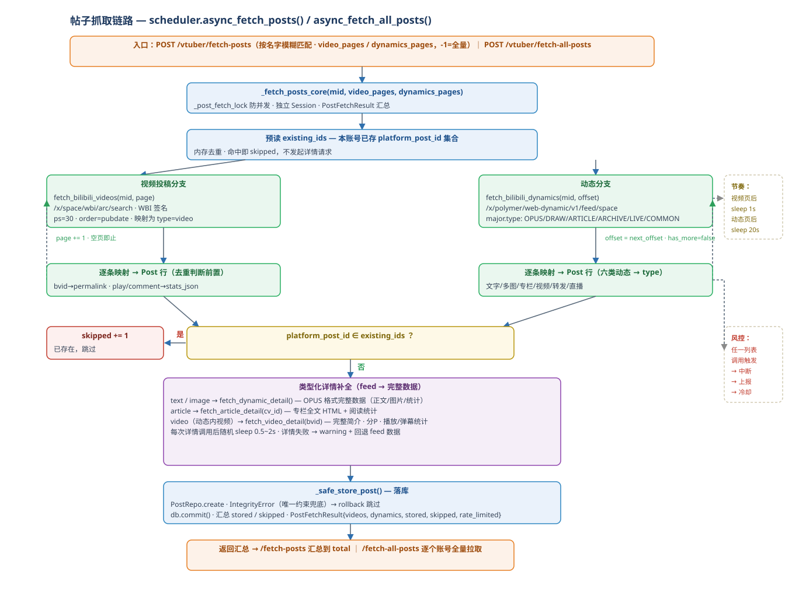
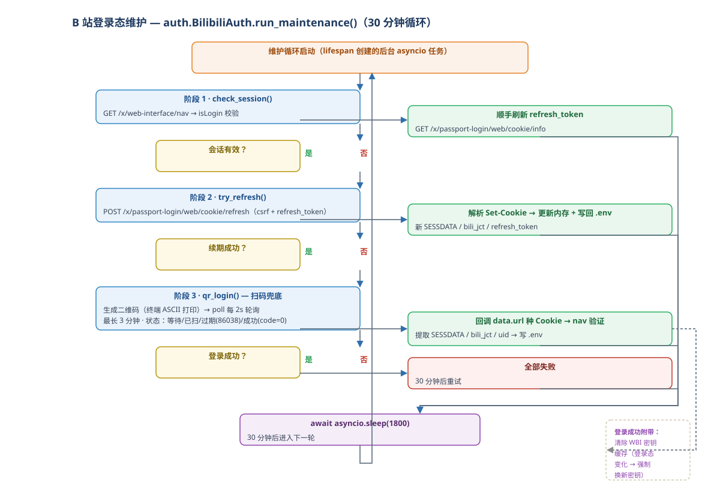
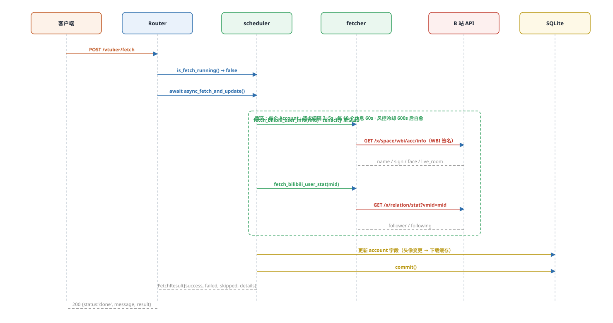
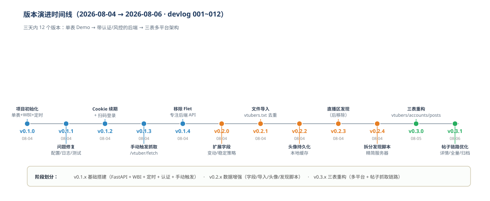

http-test 是名为 Better DD Toolkit 的 VTuber 数据监控与管理的后端服务。 它以 Bilibili 为数据源，自动抓取 VTuber 的昵称、签名、粉丝数、直播状态、视频投稿与动态（帖子）， 持久化到本地 SQLite，并通过 REST API 对外提供查询与抓取触发能力。
.env；vtbs.moe 拉取 3000+ VTuber 名单生成 CSV，服务启动时按 flag=1 去重导入；static/avatars/ 并经 /static 对外服务。| 层级 | 选型 | 用途 |
|---|---|---|
| 语言 / 运行时 | Python 3.14 | 开发语言（.pyc 为 cpython-314，实测 Python 3.14.1） |
| Web 框架 | FastAPI ≥0.115 | REST API、lifespan 生命周期、CORS、静态挂载、自动 OpenAPI 文档 |
| ASGI 服务器 | uvicorn[standard] ≥0.30 | 开发/生产运行服务器 |
| ORM | SQLAlchemy ≥2.0 | 模型定义、会话管理、关系映射（declarative_base 2.0 新路径） |
| 数据库 | SQLite（vtuber.db） | 本地嵌入式数据库，check_same_thread=False 适配异步 |
| 迁移 | Alembic ≥1.13 | schema 版本化（当前 rev c002，4 个迁移脚本） |
| 定时任务 | APScheduler ≥3.10 | BackgroundScheduler 线程，每 5 分钟抓取 |
| HTTP 客户端 | httpx ≥0.27 | 异步调用 B 站 API 与 vtbs.moe |
| 重试 | tenacity ≥8.0 | 抓取接口失败重试（3 次指数退避） |
| 配置 | python-dotenv ≥1.0 | 加载 / 回写 .env 凭证 |
| 终端二维码 | qrcode ≥7.0 | 扫码登录时终端 ASCII 二维码 |
| 数据校验 | Pydantic v2 | 请求/响应 Schema（from_attributes=True 直接序列化 ORM） |
| 测试 | pytest ≥7.0 + TestClient | 14 个 API 测试，独立测试库 test_vtuber.db |
依赖清单见 requirements.txt（10 项）。整个项目无前端框架、无消息队列、无 Redis——单进程 + 线程锁 + SQLite 的轻量架构。
http-test/
├── app/
│ ├── main.py # FastAPI 入口：日志配置、lifespan、CORS、路由注册、/static 挂载（72 行）
│ ├── core/
│ │ ├── config.py # Settings 配置中心，.env 加载（39 行）
│ │ └── database.py # engine / SessionLocal / Base / get_db 依赖（21 行）
│ ├── dependencies/
│ │ └── get_db.py # re-export core.database.get_db（3 行）
│ ├── models/
│ │ └── vtuber.py # VTuber / Account / Post 三 ORM 模型（81 行）
│ ├── schemas/
│ │ └── vtuber.py # Pydantic v2 入参/出参 Schema，9 个模型（129 行）
│ ├── repositories/
│ │ └── vtuber_repo.py # VTuberRepo / AccountRepo / PostRepo 数据访问层（129 行）
│ ├── routers/
│ │ └── vtuber.py # 16 个 API 端点 + 抓取触发（187 行）
│ └── services/ # 业务核心层
│ ├── fetcher.py # B 站 API 客户端：用户/统计/视频/动态/详情 + 风控检测（677 行）
│ ├── scheduler.py # 定时调度 + 抓取编排 + 帖子抓取 + 锁（455 行）
│ ├── auth.py # BilibiliAuth 单例：心跳/续期/扫码 + .env 回写（443 行）
│ ├── wbi.py # WBI 签名算法实现（78 行）
│ └── importer.py # CSV 导入与去重（97 行）
├── alembic/
│ ├── env.py # 迁移环境（render_as_batch 适配 SQLite）
│ └── versions/
│ ├── a001_init_v2.py # vtubers + accounts 初始化
│ ├── b001_posts_v2.py # 重建 accounts + 新建 posts
│ ├── c001_post_archived.py # posts 增加 is_archived
│ └── c002_posts_per_uid_dedup.py # 唯一约束改为按 UID 去重（重建表）
├── scripts/
│ └── discover_vtubers.py # 独立发现脚本：vtbs.moe → 粉丝数 → vtubers.csv（143 行）
├── tests/
│ └── test_vtuber_api.py # 14 个 API 测试（135 行）
├── devlog/ # 12 篇开发日志（001 ~ 012，项目演化完整记录）
├── docs/ # 本报告 + 架构图生成脚本 + diagrams/
├── static/avatars/ # 718 张头像本地缓存
├── vtubers.csv # VTuber 名单（9,482 行数据，4 个 flag=1）
├── vtuber.db / test_vtuber.db # 生产 / 测试数据库
├── logs/app.log # 日志文件（FileHandler 正常写入，devlog/013 已修复）
├── requirements.txt .env .env.example .gitignore alembic.ini
└── vtubers.session.sql # IDE 会话残留（SELECT * FROM events，无关紧要）分层关系：routers → repositories → models（经典三层），schemas 负责出入参边界校验，
services 承载全部外部 I/O 业务（抓取/认证/签名/调度/导入）。依赖方向自外向内，services 直接使用
SessionLocal 自管会话，与 Web 请求的 Depends(get_db) 会话体系解耦。
下图展示完整六层架构：客户端层（Web + 独立脚本）→ 接口层（FastAPI 路由）→ 服务层（抓取/认证/签名/调度/导入）→ 外部系统（B 站 API）与核心支撑层（配置/ORM/仓储）→ 数据层（SQLite / 头像 / 日志 / CSV）。

| 层 | 组成 | 职责与关键机制 |
|---|---|---|
| ① 客户端层 | 浏览器 / curl；discover_vtubers.py | REST 调用（Swagger /docs 可调试）；脚本独立拉名单写 CSV，不依赖项目模块 |
| ② 接口层 | main.py + routers/vtuber.py | 16 个端点；CORS 全开放；/static 头像静态挂载；lifespan 编排启动/关停 |
| ③ 服务层 | scheduler / fetcher / auth / wbi / importer | 定时调度与锁；B 站 API 调用与风控检测；Cookie 生命周期；WBI 签名；CSV 导入去重 |
| ④ 外部系统 | Bilibili Web API | 空间/粉丝/投稿/动态/详情/认证共 9 类接口；vtbs.moe 名单接口（仅脚本使用） |
| ⑤ 核心支撑层 | config / database / models / schemas / repositories | 配置中心；会话工厂；ORM 三模型；Pydantic 校验；CRUD 仓储 |
| ⑥ 数据层 | vtuber.db / static/avatars / logs / vtubers.csv | SQLite 持久化；头像本地缓存；运行日志；名单源文件 |
HTTP GET /vtuber/list
→ FastAPI 路由 list_vtubers(db=Depends(get_db)) # 依赖注入，每请求一个 Session
→ VTuberRepo(db).all() # joinedload(VTuber.accounts) 预加载
→ SQLAlchemy 查询 SQLite → 返回 ORM 对象列表
→ VTuberOut.model_validate(v, from_attributes=True) # Pydantic v2 序列化（含嵌套账号）
→ JSON 200 响应服务运行期同时存在 三路并发活动：① uvicorn Web 请求处理；② APScheduler 后台线程（每 5 分钟抓取）；
③ auth_manager.run_maintenance() asyncio 任务（每 30 分钟维护登录态）。手动触发的抓取与定时抓取之间由
threading.Lock（非阻塞获取）互斥；帖子抓取另设独立锁 _post_fetch_lock，两类任务互不阻塞。
v0.3.0 将早期单表重构为三表：vtubers（主播本体，平台无关）→
accounts（各平台账号）→ posts（动态/投稿）。posts 刻意不设外键，
以 (platform, platform_uid) 与 accounts 逻辑关联。

accounts 外键带 cascade="all, delete-orphan"，删 VTuber 自动删其账号（测试用例 test_cascade_delete 覆盖）；(platform, platform_uid, platform_post_id) 唯一——联合投稿视频会出现在多个 V 的列表里，全局去重会让第二个 V 抓取时违反唯一约束，因此 v0.3.1（迁移 c002）改为按 UID 去重，每个 V 的帖子列表完整（迁移注释原文说明）；existing_ids 内存集合（命中直接 skip，不发起详情请求）→ ② 数据库唯一约束 → ③ IntegrityError 捕获回滚跳过（_safe_store_post）；body_json 存类型差异数据（图文/视频/专栏各有结构），stats_json 存统计数据，raw_json 保留平台原始响应以防后续需要重解析；_now() 默认值 + published_at 解析时统一 timezone.utc。| 存储 type | 来源 | 详情补全接口 |
|---|---|---|
video | 投稿列表 / 动态 ARCHIVE | fetch_video_detail(bvid) — 完整简介、分 P、播放/弹幕统计 |
image / text | 动态 DRAW / OPUS / WORD | fetch_dynamic_detail(dynamic_id) — OPUS 格式完整数据 |
article | 动态 ARTICLE | fetch_article_detail(cv_id) — 专栏全文 HTML + 阅读统计 |
repost | 动态 FORWARD / COMMON | 递归解析内层 origin，附言在 module_dynamic.desc |
live | 动态 LIVE_RCMD | 使用 feed 数据（room_id / live_state） |
app/main.py 使用 FastAPI @asynccontextmanager 的 lifespan 编排启动与优雅关停。

result["created"] > 0）时，
5 秒后自动触发一次全量抓取（_delayed_fetch(5)），新名单无需等待下一个定时周期。
关停路径依次 auth_task.cancel() → shutdown_scheduler(wait=False)，保证无挂起任务阻塞退出。APScheduler 每 5 分钟触发，逐账号抓取用户信息与统计；内置请求节流、批量休息与风控冷却自愈。

fetch_bilibili_user_info（昵称/签名/头像/直播状态/直播间）+ fetch_bilibili_user_stat（粉丝/关注数）；两者均带 tenacity 重试 ≤3 次、指数退避 2~10s；commit 已更新的数据 → clear_rate_limit() → 冷却 600s → 重建 Session 重读列表 → 从原 idx 继续（断点续抓，不重头再来）；static/avatars/{uid}.jpg|png，失败仅 warning 不中断流程；threading.Lock 非阻塞获取，定时与手动触发重叠时后者直接跳过（返回 {"status":"skipped"}）。按指令触发（非常驻任务）：/vtuber/fetch-posts（按名字模糊匹配）与 /vtuber/fetch-all-posts（全库全量）。

/x/space/wbi/arc/search 分页（WBI 签名，ps=30，按发布时间排序），动态用 /x/polymer/web-dynamic/v1/feed/space 游标翻页（has_more/next_offset）；video_pages=-1 翻页到空、dynamics_pages=-1 翻到 has_more=false；major.type（OPUS/DRAW/ARTICLE/ARCHIVE/LIVE/COMMON）递归解析正文、封面、标题与链接（转发递归解析内层 origin），约 200 行解析逻辑集中在 fetcher.py；_safe_store_post 逐条插入，唯一约束冲突回滚跳过，末尾统一 commit，返回 PostFetchResult{videos, dynamics, stored, skipped, rate_limited}。B 站部分接口（空间/投稿）要求 WBI 签名，wbi.py 完整实现了该算法：
1. get_wbi_keys() → 调 /x/web-interface/nav 取 wbi_img.img_url / sub_url
→ 截取文件名得 img_key + sub_key（内存缓存 30 分钟，登录态变化时清除）
2. get_mixin_key() → raw = img_key + sub_key，按 64 位固定置换表重排取前 32 位 = mixin_key
3. encrypt_wbi(params) → 参数加 wts（当前秒级时间戳）→ 按键排序 → urlencode
→ md5(query_str + mixin_key) = w_rid
4. sign_params() → 返回 {原参数, w_rid, wts}
5. 请求 URL → https://api.bilibili.com/...?{params}&w_rid={w_rid}&wts={wts}auth.py 的 BilibiliAuth 单例管理 Cookie 全生命周期：
每次请求动态构建 Cookie 头（永远是内存中的最新值），维护循环每 30 分钟执行三级策略。

GET /x/web-interface/nav 校验 isLogin；有效则顺手调 /cookie/info 刷新 refresh_token 存量；POST /cookie/refresh（csrf + refresh_token）换新 SESSDATA，从 Set-Cookie 头解析（httpx cookie jar + 原始头正则双通道兜底）；_save_to_env() 写回 .env（按键替换式改写 + load_dotenv(override=True) 重载），重启免登录；登录成功后清除 WBI 密钥缓存强制换新签名密钥；以 POST /vtuber/fetch 为例的完整调用时序（同步等待抓取完成后返回结果）：

is_fetch_running() 防重入；响应包含 success / failed / skipped / details 明细。
由于在请求协程内同步等待全部账号抓取完成，大批量时响应耗时会随账号数线性增长——这也是全量抓取主要走定时任务/脚本的原因。共 16 个端点，按资源分四组；全部挂载于 app/routers/vtuber.py 的单一 APIRouter（无前缀）。
| 方法 | 路径 | 说明 | 返回 |
|---|---|---|---|
| GET | /vtuber/list | 全部 VTuber（含嵌套 accounts，joinedload 预加载） | list[VTuberOut] |
| GET | /vtuber/{vtuber_id} | 按 ID 查询，不存在 404 | VTuberOut |
| POST | /vtuber | 新建 VTuber | 201 VTuberOut |
| PUT | /vtuber/{vtuber_id} | 更新（exclude_unset 部分更新） | VTuberOut |
| DELETE | /vtuber/{vtuber_id} | 删除（级联删账号） | 204 |
| GET | /vtuber/{vtuber_id}/accounts | VTuber 的账号列表 | list[AccountOut] |
| POST | /vtuber/{vtuber_id}/accounts | 为 VTuber 添加账号 | 201 AccountOut |
| PUT | /account/{account_id} | 更新账号 | AccountOut |
| DELETE | /account/{account_id} | 删除账号（不牵连帖子） | 204 |
| GET | /posts/{platform}/{platform_uid} | 某平台账号的帖子，按发布时间倒序 | list[PostOut] |
| POST | /posts | 新建帖子（平台直连，不校验账号存在） | 201 PostOut |
| PUT | /post/{post_id} | 部分更新（PostUpdate 全字段可选） | PostOut |
| DELETE | /post/{post_id} | 删除帖子 | 204 |
| GET|POST | /vtuber/fetch | 手动触发全量账号抓取（同步等待完成） | {status, message, result} |
| POST | /vtuber/fetch-posts | 按名字模糊匹配抓帖子；name, platform, video_pages, dynamics_pages（-1=全量） | {status, total, details} |
| POST | /vtuber/fetch-all-posts | 全库所有 bilibili 账号全量抓帖子 | {status, total, details} |
交互式 OpenAPI 文档：运行 uvicorn app.main:app 后访问 http://127.0.0.1:8000/docs。
| 配置项 | 默认值 | 说明 |
|---|---|---|
APP_NAME | Better DD Toolkit | 应用名（未用于 Swagger 标题） |
VERSION | 0.3.1 | 与 devlog 同步（devlog/013 修复：此前停留在 0.1.0） |
DATABASE_URL | sqlite:///./vtuber.db | 相对工作目录；测试用独立 test_vtuber.db |
BILI_SESSDATA / BILI_BIJI_JCT / BILI_DEDE_USER_ID / BILI_BUVID_3 / BILI_REFRESH_TOKEN | （.env） | B 站 Cookie 凭证五件套；auth 自动回写 |
FETCH_INTERVAL_MINUTES | 5 | 定时抓取周期 |
FETCH_JITTER_SECONDS | 30 | 定时抖动（±30s 防周期性特征） |
REQUEST_INTERVAL_MIN / MAX | 3.0 / 5.0 | 账号间随机请求间隔 |
FETCH_BATCH_SIZE / FETCH_BATCH_COOLDOWN | 10 / 60 | 每 10 个账号休息 60s |
RATE_LIMIT_COOLDOWN | 600 | 风控冷却 10 分钟 |
VTUBER_LIST_FILE | vtubers.csv | 启动导入的名单文件 |
LOG_LEVEL / LOG_FILE | INFO / logs/app.log | 日志级别与文件路径 |
CORS_ORIGINS | *（可用环境变量配置） | CORS 允许来源（逗号分隔）；通配符来源时不允许携带凭据（浏览器 CORS 规范，devlog/013） |
| 修订 | 脚本 | 变更内容 | 备注 |
|---|---|---|---|
a001 | a001_init_v2.py | 创建 vtubers + accounts（含唯一约束、索引） | v0.3.0 清空旧迁移后重建；旧版迁移（350a…、fb9e…、b63a…、dd5e…、01ab…）已被历史删除 |
b001 | b001_posts_v2.py | DROP IF EXISTS 后重建 accounts，新建 posts（platform+pid 全局唯一） | 修复“全新库 drop 报 no such table”问题 |
c001 | c001_post_archived.py | posts 增加 is_archived（默认 0） | 支持帖子归档标记 |
c002 | c002_posts_per_uid_dedup.py | 唯一约束改为 (platform, platform_uid, platform_post_id) | 联合投稿按 V 各存一份；SQLite 不支持改约束 → 重命名旧表 + 重建 + 数据回填 + 索引重建（含降级路径，按 MIN(id) 去重回滚） |
当前库 alembic_version 表记录为 c002，与模型一致。注意：应用运行期使用
Base.metadata.create_all() 建表（create_all 不建 alembic_version），Alembic 与 create_all 双轨并存——
env.py 通过 from app.main import Base 取元数据（会把整个应用模块导入迁移上下文，耦合偏重，见 §16）。
tests/ 共 26 个用例（test_vtuber_api.py 14 个 API 用例 + test_services.py 12 个修复项用例，devlog/013 新增），基于 FastAPI TestClient + pytest：
app.dependency_overrides[get_db] 注入测试会话；fixture 每个用例前后清表/重建；| 表 | 行数 | 说明 |
|---|---|---|
vtubers | 4 | 星瞳official、七海Nana7mi、明前奶绿、恬豆发芽了 |
accounts | 4 | 全部为 bilibili；粉丝数 1,128,211 / 1,112,830 / 346,455 / 289,959；当前无直播中 |
posts | 11,055 | 时间跨度 2019-06-13 ~ 2026-08-13；is_archived=0 |
alembic_version | 1 | rev = c002 |
| type | video | image | text | repost | article | live | music |
|---|---|---|---|---|---|---|---|
| 数量 | 3,554 | 3,829 | 1,934 | 1,718 | 11 | 2 | 7 |
dynamic_type_music（7 条）原为 _map_dynamic_type 未覆盖
DYNAMIC_TYPE_MUSIC 枚举而泄漏的原始值。现已补充映射，并由 scripts/repair_post_types.py
一次性修复存量数据（剩余 0 条，分布中显示为 music: 7）。flag=1（与库内 4 个 VTuber 对应）；项目在 2026-08-04 至 08-06 三天内完成 12 个版本迭代，devlog/ 逐版记录了动机与变更：

| 版本 | 日期 | 主题 | 要点 |
|---|---|---|---|
| v0.1.0 | 08-04 | 项目初始化 | 单表 vtubers + WBI 签名 + 5 分钟定时 + Flet 桌面端 + Demo 数据 |
| v0.1.1 | 08-04 | 已知问题修复 | 依赖固化、配置集中化（Settings）、日志持久化、.gitignore/.env.example、7 个测试 |
| v0.1.2 | 08-04 | Cookie 自动续期与扫码登录 | auth.py 三级策略（心跳→续期→扫码）、qrcode 终端展示、.env 回写 |
| v0.1.3 | 08-04 | 手动触发抓取 | POST /vtuber/fetch、FetchResult、threading.Lock 防重叠 |
| v0.1.4 | 08-04 | 移除 Flet 前端 | 专注后端，前端独立开发 |
| v0.2.0 | 08-04 | 扩展数据字段 | 签名/直播状态/直播间字段；“变动/稳定”字段差异化更新策略 |
| v0.2.1 | 08-04 | 文件导入与去重 | 移除 Demo 数据，vtubers.txt 导入 + UID 去重 + 新名单自动触发抓取 |
| v0.2.2 | 08-04 | 头像持久化 | avatar URL + 本地缓存路径双字段、/static 静态挂载 |
| v0.2.3 | 08-04 | 直播区发现 | 直播虚拟区扫描发现（v0.2.4 起移至脚本） |
| v0.2.4 | 08-04 | 拆分发现脚本 | discover_vtubers.py 独立化（vtbs.moe 3000+ 名单）、服务端精简 |
| v0.3.0 | 08-05 | 数据库重构三表 | vtubers/accounts/posts 多平台模型、CSV 格式 flag 化、迁移重置 a001 |
| v0.3.1 | 08-06 | 帖子抓取链路优化 | 详情补全修复、分页参数化与全量拉取、is_archived、锁与频率控制、按 UID 去重 |
| v0.3.2 | 08-17 | 修复建议落地 | 日志落盘修复、风控 ContextVar 隔离、版本同步、MUSIC 映射+存量修复、CORS 规范、客户端复用、12 个新测试（devlog/013，本报告 §19） |
logs/app.log 为 0 字节。
根因：main.py 第 13 行 from app.services.scheduler import ... 触发 scheduler 模块导入，其第 27 行先执行了
logging.basicConfig(level=...)；随后 main.py 第 19 行的 basicConfig(handlers=[FileHandler, StreamHandler])
因“根 logger 已配置过”而被静默忽略——FileHandler 从未注册。修复：删除 scheduler.py 的 basicConfig（devlog/013，启动实测日志正常落盘）。fetcher.py 的 _rate_limited 是模块级全局变量，
由两大抓取任务共享（虽然各有锁互斥，但跨任务仍可能互相污染——帖子任务触发风控可能被账号抓取任务读到并误冷却）。
已改为 contextvars.ContextVar 任务级隔离 + 任务启动时重置（附隔离单测）。settings.VERSION 已更新为 0.3.1。DYNAMIC_TYPE_MUSIC 未在映射表，导致库中出现 7 条
type='dynamic_type_music' 的原始值泄漏（fallback raw.lower() 直接把枚举名存库）。
已补映射（→ music）并执行 scripts/repair_post_types.py 修复存量数据（剩余 0 条）。httpx.AsyncClient（连接不复用）——已修复（任务级复用）；② 头像扩展名判定 ".jpg" in url else ".png"
对 gif/webp 会存错扩展名——已修复（_avatar_ext 按 URL 路径推导）；③ alembic/env.py 从 app.main 导入 Base，迁移上下文耦合整个应用（含日志副作用）——已修复（改从 core.database 导入并显式注册模型）；
④ create_all 与 Alembic 双轨建表存在 drift 风险——未处理；⑤ REST API 本身无鉴权且 CORS allow_origins=["*"] +
allow_credentials=True，公网部署需收紧——已修复（CORS_ORIGINS 可配置；通配符来源时不携带凭据，符合浏览器规范；API 鉴权仍建议后续增加）；⑥ _fetch_one_account 返回语义混合（风控/无数据都计入 failed）——未处理；
⑦ fetch/auth/wbi/调度/导入均无测试覆盖（httpx 未 mock）——部分修复（新增 12 个修复项单测；网络层 mock 与 auth 状态机测试仍缺）。_rate_limited 从模块级全局改为任务级状态，避免跨任务污染；settings.VERSION 与 devlog/发布流程打通（如 pyproject 统一管理）——已更新为 0.3.1；httpx.MockTransport / respx mock 外部 API，为 fetcher/wbi/scheduler/importer 补单测；为 auth 状态机补状态转移测试——已新增 12 个修复项单测，网络 mock 仍建议后续补齐；httpx.AsyncClient（连接池 + HTTP/2）；抓取会话批量 commit 而非逐条——客户端复用已落地，批量 commit 仍可优化；app/main.py · app/core/{config,database}.py · app/dependencies/get_db.py
app/models/vtuber.py · app/schemas/vtuber.py · app/repositories/vtuber_repo.py
app/routers/vtuber.py · app/services/{fetcher,scheduler,auth,wbi,importer}.py
alembic/{env.py,script.py.mako,README,alembic.ini}
alembic/versions/{a001_init_v2,b001_posts_v2,c001_post_archived,c002_posts_per_uid_dedup}.py
scripts/discover_vtubers.py · scripts/repair_post_types.py · tests/{test_vtuber_api,test_services}.py
devlog/001~013（开发日志）· docs/{本报告,gen_diagrams.py,diagrams/8 张 SVG}
requirements.txt · .env · .env.example · .gitignore · alembic.ini
vtubers.csv（9,482 行）· vtuber.db · test_vtuber.db · logs/app.log · vtubers.session.sql
static/avatars/（718 个缓存文件）本报告中的 8 张架构图由 docs/gen_diagrams.py 生成（纯 Python 手绘 SVG，无第三方依赖），
修改后运行 python docs/gen_diagrams.py 即可重新生成。报告文件：docs/项目架构分析报告.html（本文件），
直接双击用浏览器打开即可查看全部图表。
根据 §16/§17 的修复建议，逐项落地并实测验证。完整记录见 devlog/013-20260817-v0.3.2-修复建议落地.md。
| 编号 | 问题 | 修复方式 | 验证结果 |
|---|---|---|---|
| P1 | 日志文件恒为空（scheduler 抢先 basicConfig） | 删除 scheduler.py 的 basicConfig，根日志配置统一由 main.py 完成 | 启动实测 logs/app.log 写入 13+ 行 ✓ |
| P2 | 风控全局标志并发污染 | 改为 contextvars.ContextVar 任务级隔离；抓取任务启动时重置 | 并行任务隔离单测 ✓ |
| P3 | 版本号停留在 0.1.0 | settings.VERSION → 0.3.1 | 版本同步单测 ✓ |
| P4 | DYNAMIC_TYPE_MUSIC 映射缺项（7 条脏数据） | 补映射（→ music）+ scripts/repair_post_types.py 一次性修复存量 | 修复 7 条，剩余 0 ✓ |
| P5① | 每次请求新建 httpx.AsyncClient | fetcher 各函数新增可选 client 参数；scheduler 任务级复用 + aclose | 全量测试通过 ✓ |
| P5② | 头像扩展名误判（gif/webp 存成 png） | 新增 _avatar_ext() 按 URL 路径推导 | 5 组用例 ✓ |
| P5③ | alembic/env.py 耦合 app.main | 改为 from app.core.database import Base + 显式注册模型 | alembic current → c002 (head) ✓ |
| P5⑤ | CORS 通配符 + 凭据组合不合规范 | CORS_ORIGINS 可配置；通配符来源时 allow_credentials=False | 实测响应头符合规范 ✓ |
| P5⑦ | 服务层无测试 | 新增 tests/test_services.py 12 个用例（风控/映射/头像/CORS/importer/WBI） | 26 passed ✓ |
| 附带 | importer 列表文件缺失时自建会话未关闭 | 路径校验前置 + db 参数可注入（可测性） | 缺失文件用例 ✓ |
_fetch_one_account 返回语义（P5⑥）、网络层 httpx.MockTransport 接口级测试、auth 状态机测试、
REST API 鉴权、SQLite → PostgreSQL、结构化日志与抓取指标。